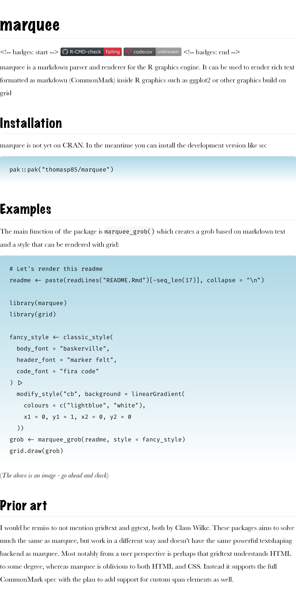

marquee is a markdown parser and renderer for the R graphics engine. It can be used to render rich text formatted as markdown (CommonMark) inside R graphics such as ggplot2 or other graphics build on grid
Installation
marquee is not yet on CRAN. In the meantime you can install the development version like so:
pak::pak("thomasp85/marquee")Examples
The main function of the package is marquee_grob() which creates a grob based on markdown text and a style that can be rendered with grid:
# Let's render this readme
readme <- paste(readLines("README.Rmd")[-seq_len(17)], collapse = "\n")
library(marquee)
#>
#> Attaching package: 'marquee'
#> The following object is masked from 'package:graphics':
#>
#> box
library(grid)
fancy_style <- classic_style(
body_font = "baskerville",
header_font = "marker felt",
code_font = "fira code"
) |>
modify_style("cb", background = linearGradient(
colours = c("lightblue", "white"),
x1 = 0, y1 = 1, x2 = 0, y2 = 0
))
grob <- marquee_grob(readme, style = fancy_style)
grid.draw(grob)
(The above is an image - go ahead and check)
Prior art
I would be remiss to not mention gridtext and ggtext, both by Claus Wilke. These packages aims to solve much the same as marquee, but work in a different way and doesn’t have the same powerful textshaping backend as marquee. Most notably from a user perspective is perhaps that gridtext understands HTML to some degree, whereas marquee is oblivious to both HTML and CSS. Instead it supports the full CommonMark spec with the plan to add support for custom span elements as well.